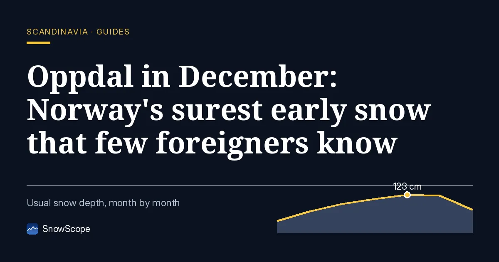
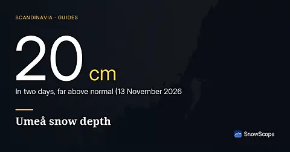

Oppdal in December: Norway's surest early snow that few foreigners know
Oppdal sits in a dry valley where snow stays. On 15 December, a typical year brings 60 cm at the base (585 m), and 93 percent of past winters kept 30 cm or more there in the week before Christmas. Few foreign skiers know this inland resort, yet it has Norway's most reliable early-season snow at the bottom.
See the live snow forecast for Oppdal in the SnowScope appSnow depth, powder alerts and the 3D map, free.
Why the base stays white when others don't
Between Dovrefjell and Trondheim, Oppdal sits in a cold, dry valley that holds snow better than lower resorts nearby. The 41 km of runs and 15 lifts span from 585 m to 1327 m, but what sets December apart here is that beginner and family slopes at the bottom are almost as snowy as the top.
On 15 December, the depths are 60 cm at the base, 64 cm at mid-mountain (956 m) and 72 cm at the top (1327 m). That nearness across the heights is rare in Norway.


The numbers that matter for December
In the week of 15-21 December, 93 percent of past winters had 30 cm or more at the base. At mid-mountain it rises to 96 percent, and at the top to 98 percent. Christmas week (22-28 December) is even more certain: 96 percent at the base, 98 percent at mid and top.
Even a lean year (1 in 10 winters) keeps 30 cm at the base and 40 cm at mid-mountain on 15 December. So thin snow is rare here in mid-winter.
Shorter days, colder air
December this far north means you gain fewer daylight hours. The sun rises late and sets early, so plan to ski from first light and expect a shorter day on the slopes. Cold is constant in a dry valley, so pack layers and warm gloves.
The upside: that dry cold keeps the snow light and stable, good for most abilities and slope types.
The long-term trend
Over 46 winters, December snow at Oppdal has shifted. The base averaged 71 cm in the first half of this period but fell to 46 cm in the most recent 15 winters. Last winter (2025-26) had 38 cm at all three heights on 15 December: still enough to ski on, yet below the older average.
This slowdown reflects a broader pattern across the region, so book early and choose dates before the main Christmas week if you want the surest conditions.
Oppdal versus Trysil: where to bet on early snow
Trysil is bigger and more famous: 101 km of runs and 40 lifts. But in December, its base (407 m) is weaker. On a typical 15 December, Trysil's base has 26 cm and only 52 percent of winters held 30 cm in the week of 15-21 December. Its mid-mountain (44 cm, 83 percent) and top (60 cm, 89 percent) are solid, but still below Oppdal's.
If your group includes beginners or you want to ski low slopes in December with high confidence, Oppdal is the safer bet.
How to book and get there
Oppdal sits on the Oslo-Trondheim railway and main road, so you can reach it without a long mountain drive in bad weather. Lift passes use dynamic pricing set by date in the operator's online shop; on 13 November 2026 no fixed price was visible on their official page.
The rule is simple: buy online early, and choose dates outside the Christmas holidays to pay less and avoid crowds.
Tips for skiers
- Families with young skiers: pick dates in early or late December and use the base lifts; Oppdal's low slopes stay covered in 93 percent of winters mid-month.
- Book your pass online well ahead and for a week before Christmas week to lower cost and find quieter slopes.
- Start your day on the first lift; darkness comes fast this far north in December.
- Bring heavy gloves and layers; dry valleys are often the coldest part of the range.
- Before going off-piste in the Dovrefjell area, check the official Norwegian avalanche bulletin at varsom.no.
About these numbers
Resort snow depths are the deepest snow on the resort's upper slopes on the date shown; they are estimates for an area, not a measurement at one point. Forecasts can change. Always read the official avalanche bulletin before going off-piste.
Official avalanche bulletins: Varsom (NVE)
Cite this report
For research, teaching or the press: the numbers and charts are free to reuse under CC BY 4.0 with this citation.
SnowScope (2026), Oppdal in December: Norway's surest early snow that few foreigners know, https://snowscope.app/blog/en/2026/11/oppdal-december-skiing-snow-reliable-norway.html, accessed 2026-11-14
SnowScope (Atlas Labs). (2026, November 14). Oppdal in December: Norway's surest early snow that few foreigners know. SnowScope snow reports. https://snowscope.app/blog/en/2026/11/oppdal-december-skiing-snow-reliable-norway.html
BibTeX
@misc{snowscope2026oppdaldecemberskiingsnow,
author = {{SnowScope (Atlas Labs)}},
title = {Oppdal in December: Norway's surest early snow that few foreigners know},
year = {2026},
month = nov,
howpublished = {\url{https://snowscope.app/blog/en/2026/11/oppdal-december-skiing-snow-reliable-norway.html}},
note = {Published 2026-11-14 13:44 UTC; accessed 2026-11-14}
}· CC BY 4.0 · Methods, data and tools →
Oppdal: snow and temperature by height, this winter vs last (tools) →
Follow Oppdal
Free: a message when fresh snow is coming, and the forecast every morning.
More snow reports

Measured snow depth in Finland on 13 November 2026: 58 of 161 stations white, almost all of them north of the 64th parallel, the deepest only 13 cm at Kilpisjärvi. The south, Helsinki and Tampere included, is bare.

Umeå measured 20 cm of snow on 13 November 2026, up from bare ground on Wednesday. How the stations around the city compare, why this is early, and whether it survives Monday's rain.

Trondheim on 13 November 2026: no snow depth reported in the city, bare ground at Ørland, 5 cm at Meråker, 18 cm at Tågdalen, 11 cm at Røros. What is normal for mid-November, and a mild, wet weekend.